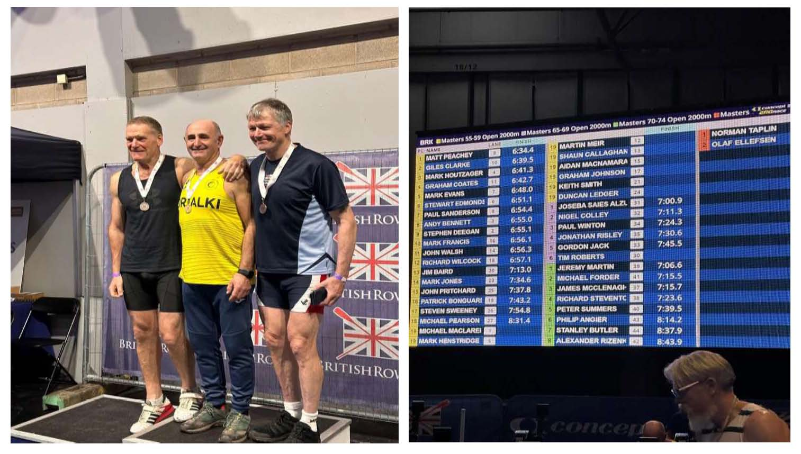
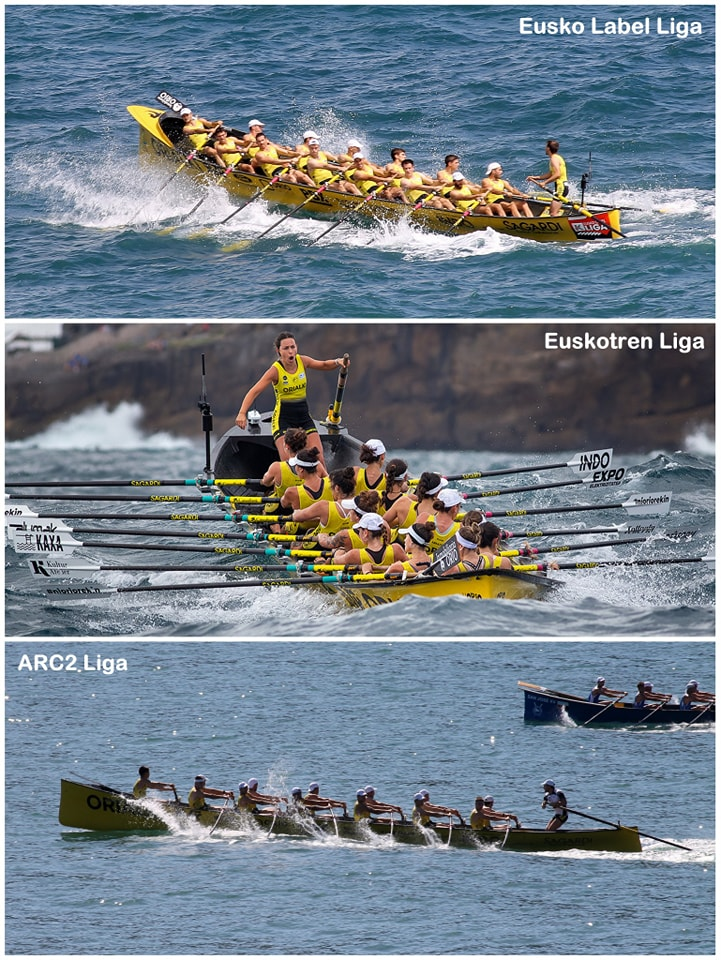
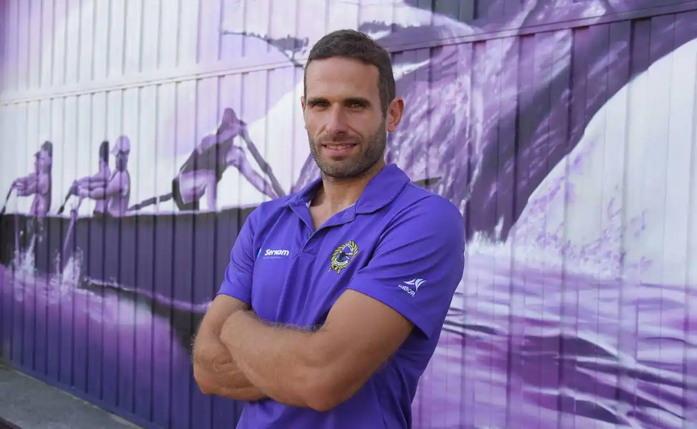
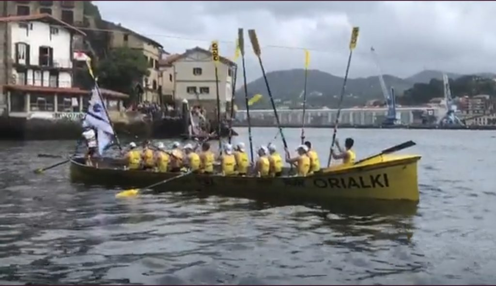
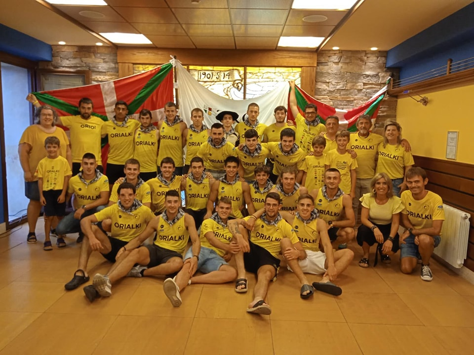

Joseba Saies
Joseba Saies ha participado en el Open Británico de
Remo-ergometro en la categoría de 65 a 69 años en el
que ha ganado la prueba y ha conseguido la clasificación
para la Copa del Mundo ha disputar en Praga.
Aupa Orio!!

Orio AE-Orialki.. 3 Traineras. 5 Regatas!!

Mikel Arostegi será el entrenador de Orio «A»
Liga ARC-2 Orio-Orialki ganador en la Bandera de San Juan


Los remeros de Orio AE-ORIALKI fueron recibidos ayer
para celebrar la bandera de Bilbao y la consecución de
Liga ARC-2. ¡Mostramos a la afición todas las banderas
ganadas en la Liga ARC-2 y lo celebramos efusivamente con
aplausos!
Un gran año 💪🏻👏🏻 zORIOnak!!